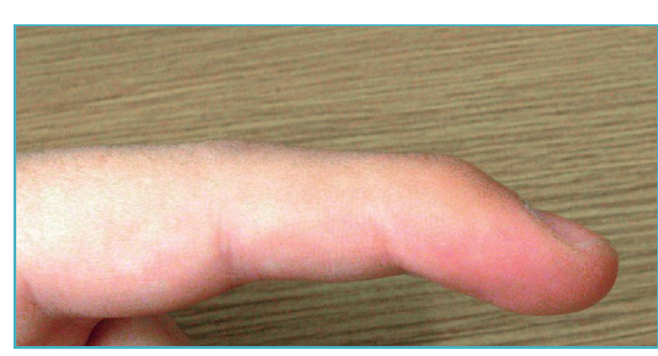
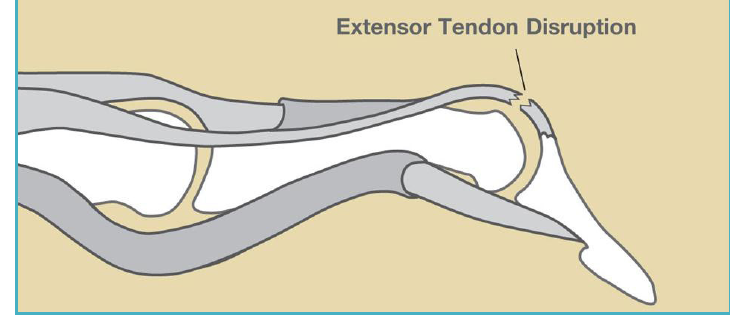
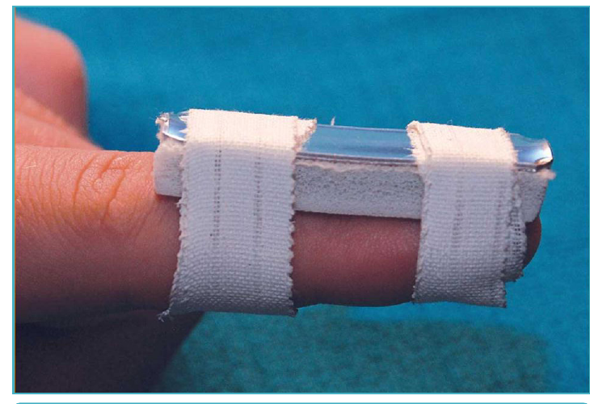
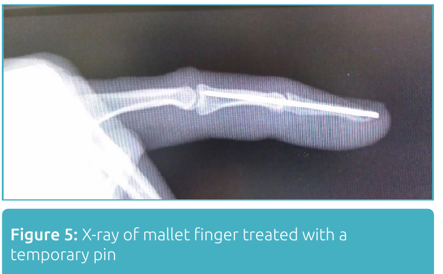
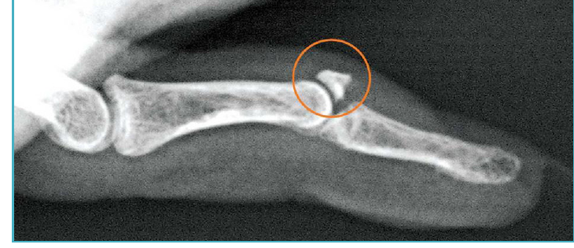

Condition
Mallet Finger
A dropped fingertip after an injury. Usually treated with a splint worn continuously for 6 to 8 weeks.

Illustration © American Society for Surgery of the Hand
What is mallet finger?
A small tendon on the back of your finger straightens the fingertip. A sudden bending force (such as a ball striking the tip, or catching a finger on furniture) can tear that tendon or pull off a small piece of bone with it. The fingertip then droops and you cannot lift it on your own. This is called a mallet finger.

Illustration © American Society for Surgery of the Hand
Common symptoms
- The tip of the finger droops and you cannot straighten it by itself
- You can still bend the tip; what you cannot do is straighten it
- Pain and swelling over the back of the last finger joint
- A bruise or tenderness along the top of the fingertip
Why does it happen?
Mallet finger is usually caused by a ball striking the end of an extended finger (basketball, volleyball, baseball) or by catching the finger while tucking in a bedsheet or reaching into a bag. It can also happen with a small cut over the back of the fingertip.
Treatment options
Non-surgical treatment
- Continuous splinting. A small splint holds the fingertip straight 24 hours a day for 6 to 8 weeks. Letting the fingertip bend even once during that time can restart the healing clock, so the splint is only removed for careful skin care with the finger kept flat on a table. This works for the majority of mallet fingers.

Illustration © American Society for Surgery of the Hand
Surgical treatment
- Pinning or repair. Surgery is only needed for some mallet injuries, usually when a large piece of bone has been pulled off, when the joint is dislocated, or when splinting has failed. A small pin across the joint holds the finger straight while it heals.

Illustration © American Society for Surgery of the Hand
What to expect at your visit
Dr. Barrera will examine the finger and take an X-ray to see whether a piece of bone has come off with the tendon. In most cases a splint can be fitted the same day. You will be shown how to care for the skin without letting the fingertip bend, which is the key to a good outcome.

Illustration © American Society for Surgery of the Hand
Call us right away if there is a cut or broken skin over the dropped fingertip, if the finger becomes red and warm (signs of infection), or if the fingertip looks pale or cold.
Related
Questions?
Call your office location for non-urgent questions:
- NYU Langone Laurelton · 646-501-4950
- NYU Orthopedic, Woodside · 929-429-3222
- NYU Orthopedic, Richmond Hill · 718-206-6923
- Jamaica Hospital Ambulatory Care Center (ACC) · 718-301-0720
See our office contact information for addresses and fax numbers.